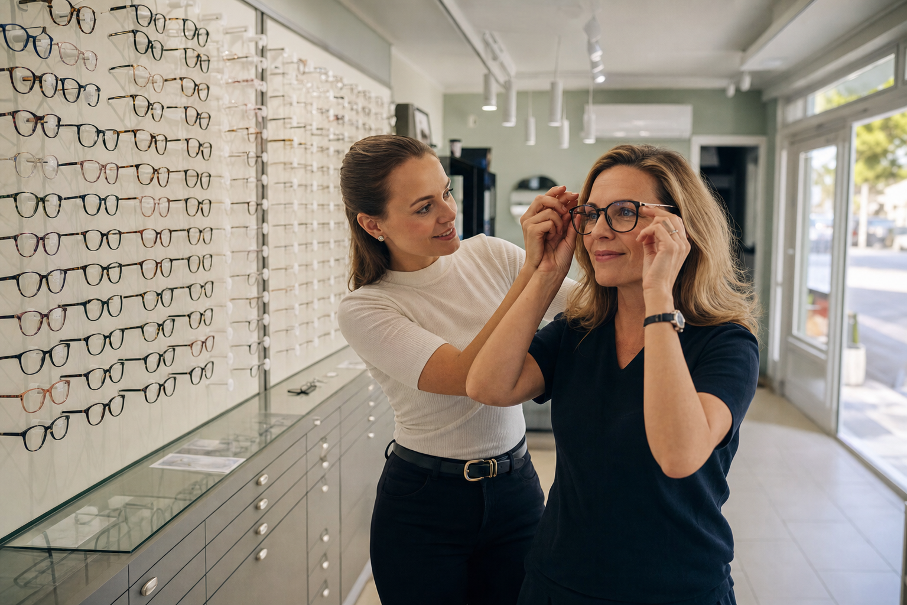
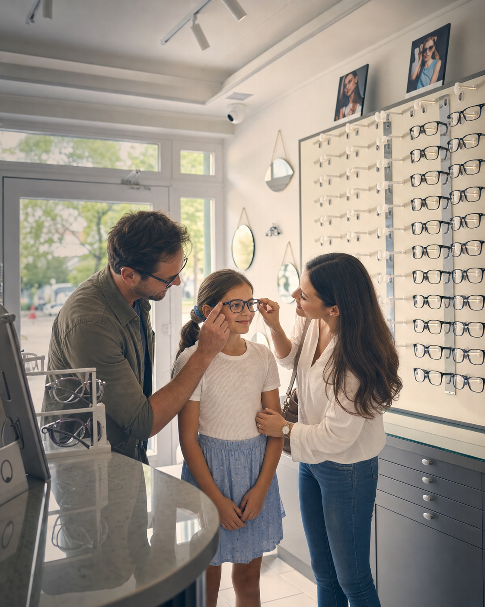
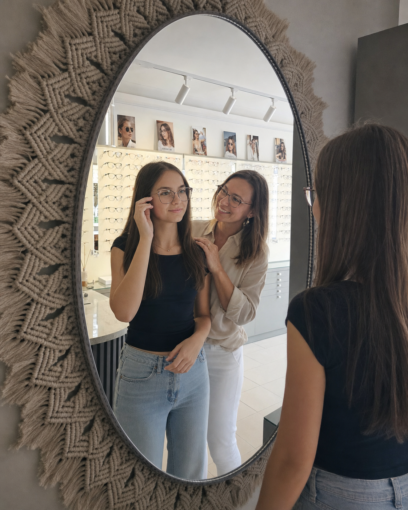
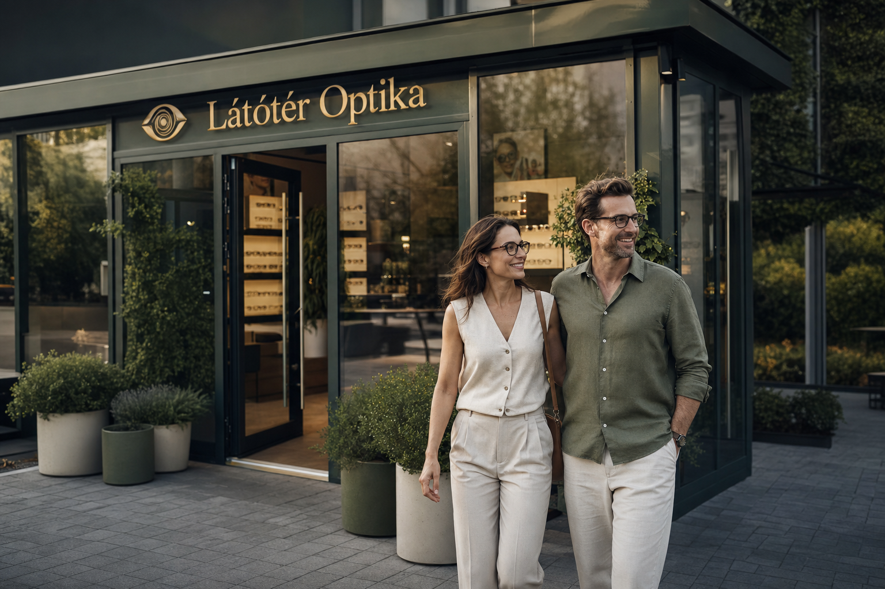

Éles látás,
szakértelemmel és gyorsasággal
Személyre szabott szemüvegek, minőségi lencsék és egyedi keretek minden korosztály számára Siófok szívében.
Amiben igazán jók vagyunk
Segítünk megtalálni a megfelelő keretet és lencsét, mindezt rövid időn belül.
Ami elromlott megjavítjuk, ami hiányzik elkészítjük.

Egyedi szemüvegkészítés
Precíz látásvizsgálat után olyan szemüveget készítünk, amit öröm hordani. Kerettől a lencséig minden az Ön szeméhez igazítva.
Napszemüvegek
UV400 szűrős lencsék, akár saját dioptriával. A vízparti nyár kötelező kelléke.

Gyors javítás és beállítás
Eltört a szár? Meglazult a csavar? Nyaralás közben is megoldjuk, sokszor még aznap.
Látásvizsgálat
Szakértő optometristáink modern műszerekkel végzik a látásvizsgálatot.
Prémium keretek
Gondosan válogatott kollekció a legmegbízhatóbb gyártóktól, korrekt áron. Megéri felpróbálni.
A jó hangulat nálunk alapfelszereltség
Családi vállalkozásként hiszünk abban, hogy minden szemüveg egyedi, ahogyan viselője is. Fontos, hogy mindenki számára megtaláljuk a tökéletes keretet a megfelelő lencsével. Jól felszerelt műhelyünkben precízen, helyben készítjük el szemüvegeinket.
- Személyre szabott tanácsadás
- Helyben készített szemüvegek
- Minden generációt szívesen látunk
- Korrekt árak, meglepetések nélkül



Márkák, amikben megbízunk
Csak olyan keretet és lencsét adunk a kezébe, amit mi magunk is szívesen hordanánk.
A vízparton a nap kétszer süt
Stílusos napszemüvegeink UV400 védelemmel óvják szemeit. Polarizált lencséink csökkentik a vízfelszínről visszaverődő zavaró csillogást.
Napvédő lencséket pedig saját dioptriával is elkészítjük.
Pár kattintás, és várjuk
Foglaljon időpontot látásvizsgálatra vagy tanácsadásra a Clearvisio rendszerében, és érkezéskor már minden Önre vár.
Kérjen időpontotKerülje el a sorbanállást!
Telefonon is szívesen segítünk nyitvatartási időben.
Ugorjon be hozzánk
Cím
8600 Siófok, Sió utca 6. Fsz. 1.
Telefon
Nyitvatartás